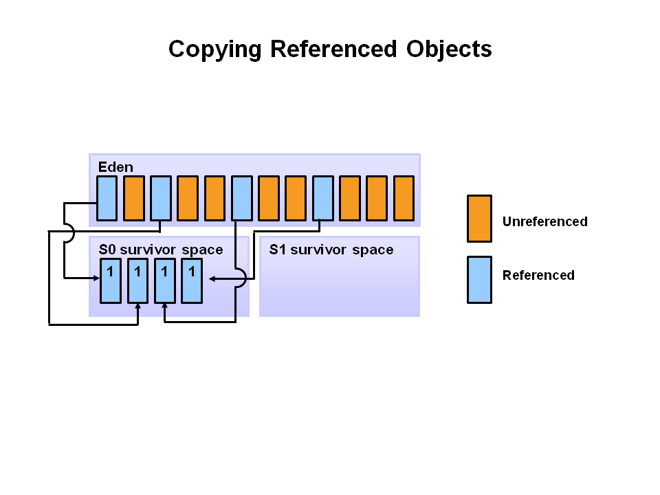

Garbage Collection
Sergey V. Ignatov
Created: 2018-11-14 ะกั 23:58
Agenda
- Garbage Collector Basics
- Terminology
- Garbage Collector Terminology
- Useful Terms
- Useful Metrics
- Memory Management
- Garbage Collection Algorithms
Garbage Collector Basics
What Is It?
- Find data objects in the program, that cannot be accessed in the future
- Reclaim resources used by these objects
- So, Garbage Collection is automatic reclamation of computer memory storage.
Advantages
- Getting rid of dangling pointer bugs
- Getting rid of double free bugs
- Getting rid of certain type of memory leaks
Disadvantages
- Extra computing resources
- Unpredictable collection time
- More memory-related work than useful work
Conclusion
- Studies showed that performance of systems with well-implemented garbage collectiors is highly competitive with systems with explicit deallocation.
- Automatic deallocation allows a programmer not to worry about memory management, increasing writeability of a system, and decreasing development time and costs.
- Explicit management introduces possibilities for making errors in memory management, and thus, decreases reliability.
- Garbage collection promotes purely modular design - explicit deallocation causes one module to be responsible for knowing that other modules are not interested in this particular object.
Brief History
- Automatic Garbage Collector
- First automatic garbage collection:
- LISP (1958)
- Several other languages implemented it:
- BASIC (1964)
- Logo (1967)
- Java 1.0 (1996)
- First automatic garbage collection:
Terminology
Dangling Pointers
- Dangling pointers or wild pointers in computer programming are pointers that do not point to a valid object of the appropriate type. These are special cases of memory safety violations. More generally, dangling references and wild references are references that do not resolve to a valid destination.
Dangling Pointers
Java Native Interface (JNI)
- JNI is a programming framework that enables Java code running in a Java Virtual Machine (JVM) to call and be called by native applications (programs specific to a hardware and operating system platform) and libraries written in other languages such as C, C++ and assembly.
Garbage Collection Roots
- A garbage collection root is an object that is accessible from outside the heap. Every object tree must have one or more root objects. As long as the application can reach those roots, the whole tree is reachable.
Garbage Collection Roots
- Local variables: input parameters or locally created objects of methods that are still in the stack of a thread. For all intents and purposes, local variables are GC roots.
- Active threads: A started, but not stopped thread are always considered live objects and are therefore GC roots. This is especially important for thread local variables.
- Static variables: are referenced by their classes. This fact makes them de facto GC roots. Classes themselves can be garbage-collected, which would remove all referenced static variables.
- JNI References are objects that the native code has created as part of a JNI call. Objects thus created are treated specially because the JVM does not know if it is being referenced by the native code or not.
Garbage Collection Roots
- System Class: Class loaded by bootstrap(initial loading)/system class loader.
- JNI Local: Local variable in native code, such as user defined JNI code or JVM internal code.
- JNI Global: Global variable in native code, such as user defined JNI code or JVM internal code.
- Thread Block: Object referred to from a currently active thread block.
- Busy Monitor: Everything that has called
wait()ornotify()or that is synchronized. - Native Stack: In or out parameters in native code, such as user defined JNI code or JVM internal code.
Garbage Collection Roots
- Finalizable: An object which is in a queue awaiting its finalizer to be run.
- Unfinalized: An object which has a finalize method, but has not been finalized and is not yet on the finalizer queue.
- Unreachable: An object which is unreachable from any other root, but has been marked as a root by Memory Analysis Program.
- Java Stack Frame: When Java stack frames is trated as objects.
- Unknown: An object of unknown root type marked by Memory Analysis Program
Garbage Collection Roots
Garbage Collection Roots For Simple Program
- A simple Java application has the following GC roots:
- Local variables in the
mainmethod - The main thread
- Static variables of the main class
- Local variables in the
OopMap Structure
- OopMap is a structure that records where object references (OOPs) are located on the Java stack. Its primary purpose is to find GC roots on Java stacks and to update the references whenever objects are moved within the Heap.
OopMap Structure
- There are three kinds of OopMaps:
- OopMaps for interpreted methods. They are computed lazily, i.e. when GC happens, by analyzing bytecode flow.
- OopMaps for JIT-compiled methods. They are generated during JIT-compilation and kept along with the compiled code so that VM can quickly find by instruction address the stack locations and the registers where the object references are held.
- OopMaps for generated shared runtime stubs. These maps are constructed manually by the developers - authors of these runtime stubs.
GC Safepoints
- A GC Safepoints is a point or range in a thread's execution where the collector can identify all the references in that thread's execution stack.
- GC Safepoints and Safepoints are often used interchangeable
- But there are other types of safepoints, including ones that require more information than a GC safepoint does (e.g. deoptimization)
- "Bringing a thread to a safepoint" is a act of getting a thread to reach a safepoint and not execute past it
- Close to, but not exactly the same as "stop at a safepoint", for example JNI: you can keep running in, but not past the safepoint
- Safepoint opportunities are (or should be) frequent
- In a Global Safepoint all threads are at a Safepoint
Garbage Collector Terminology
Parallel Collector
- A Parallel Collector uses multiple CPUs to perform Garbage Collection
Concurrent Collector
- A Concurrent Collector performs Garbage Collection work concurrently with the application's own execution
Stop-The-World Collector
- A Stop-The-World Collector performs Garbage Collection while the application is completely stopped
Incremental Collector
- An Incremental Collector performs a Garbage Collection operation or phase as a series of smaller discrete operations with (potentially long) gaps between
Mostly
- Mostly means sometimes it isn't (usually means a different fall back mechanism exists)
Conservative Collector
- A Collector is Conservative if it is unaware of some object references at collection time, or is unsure about whether a field is a referenced or not
Precice Collector
- A Collector is Precice if it can fully identify and process all object references at the time of collection
- A collector MUST be precise in order to move objects
- The COMPILERS need to produce a lot of information (oopmaps)
- All commercial server JVMs use precise collectors
- All commercial server JVMs use some form of a moving collector
Common to All Precise GC Mechanism
- Identify the live objects in the memory heap
- Reclaim resources held by dead objects
- Periodically relocate live objects
- Examples:
- Mark/Sweep/Compact (common for Old Generations)
- Copying Collector (common for Young Generations)
Mark (aka "Trace")
- Start from "roots" (thread stacks, statics, etc)
- "Paint" anything you can reach as "live"
- At the and of Mark pass:
- all reachable objects will be marked as "live"
- all non-reachable objects will be marked as "dead" (aka "non-live")
- Note: work is generally linear to "live set"
Sweep
- Scan through the heap, identify "dead" objects and track them somehow
- usually in some form of free lists
- Note: work is generally linear to heap size
Compact
- Over time, heap will get "swiss cheesed": contiguous dead space between objects may not be large enough to fit new objects (aka "fragmentation")
- Compaction moves live objects together to reclaim contiguous empty space (aka "relocate")
- Compaction has to correct all object references to point to new object locations (aka "remap")
- Remap scan must cover all references that could possibly point to relocated objects
- Note: work is generally linear to "live set"
Copy
- A copying collector moves all live objects from a "from" space to a "to" space & reclaim "from" space
- At start of copy, all objects are in "from" space and all references point to "from" space.
- Start from "root" references, copy any reachable object to "to" space correcting references as we go.
- At end of copy, all objects are in "to" space, and all references point to "to" space
- Note: work generally linear to "live set"
Mark/Sweep/Compact, Copy, Mark/Compact
- Copy requires 2x the max. live set to be reliable
- Mark/Compact [typically] requires 2x the max. live set in order to fully recover garbage in each cycle
- Mark/Sweep/Compact only requires 1x (plus some)
- Copy and Mark/Compact are linear only to live set
- Mark/Sweep/Compact linear (in Sweep) to heap size
- Mark/Sweep/(Compact) may be able to avoid some moving work
- Copying is [typically] "monolithic"
Generational Collection
- Generational Hypothesis: most objects die young
- Focus collection efforts on young generation:
- Use a moving collector: work is linear to the live set
- The live set in the young generation is a smal % of the space
- Promote objects that live long enough to older generations
- Only collect older generations as they fill up
- "Generational filter" reduces rate of allocation into older generations
- Tends to be (order of magnitude) more efficient
- Great way to keep up with high allocation rate
Generational Collection
- Requires a "Remembered set": a way to track all references into the young generatin from the outside
- Remembered set is also part of "roots" for young generation collection
- No need for 2x the live set: Can "spill over" to old gen
- Usually want to keep suviving objects in young generation for a while before promoting them to the old generation
- Immediate promotion can dramatically reduces gen.filter efficiency
- Waiting too long to promote can dramatically increase copying work
How Does The Remembered Set Work?
- Generational collectors require a "Remembered set": a way to track all references into the young generation from the outside
- Each store of a NewGen reference into and OldGen object needs to be intercepted and tracked
- Common techique: "Card Marking"
- A bit (or byte) indicating a word (or region) in OldGen is "suspect"
- Write barrier used to track references
- Common techique (e.g HotSpot): blind stores on reference write
- Variants: precise vs. imprecise card marking, conditional vs. non-conditional
The Typical Combos In Commercial Server JVMs
- Young generation usually uses a copying collector
- Young generation is usually monolithic, stop-the-world
- Old generation usually uses Mark/Sweep/Compact
- Old generation may be STW, or Concurrent, or mostly-Concurrent, or Incremental-STW, or mostly-Incremental-STW
Useful Terms
- Mutator: Your program…
- Parallel: Can use multiple CPUs
- Concurrent: Runs concurrently with program
- Pause: A time duration in which the mutator is not running any code
- Stop-The-World(STW): Something that is done in a pause
- *Monolithic: Something that must be done in it's entirely in a single pause
Useful Terms
- Generational: Collects young objects and long lived objects separately
- Promotion: Allocation into old generation
- Marking: Finding all live objects
- Sweeping: Locating the dead objects
- Compaction:
- Defragments heap
- Moves objects in memory
- Remaps all affected references
- Frees contiguous memory regions
Useful Metrics
- Heap Population (aka Live set): How much of your heap is alive
- Allocation Rate: How fast you allocate
- Mutation Rate: How fast your program updates references in memory
- Heap Shape: The shape of the live object graph (hard to quantify as a metric)
- Object Lifetime: How long objects live
Useful Metrics
- Cycle Time: How long it takes the collector to free up memory
- Marking Time: How long it takes the collector to find all live objects
- Sweep Time: How long it takes to locate dead objects (relevant for Mark/Sweep)
- Compaction Time: How long it takes to free up memory by relocating objects (relevant for Mark/Sweep)
Memory Management
Java Virtual Machine Generations
- The Heap is broken up into smaller parts of generations:
- Young Generation
- Old or Tenured Generation
- Permanent Generation

Young Generation
- The Young Generation is where all new objects are allocated and aged. When the young generation fills up, this causes a minor garbage collection. Minor collections can be optimized assuming a high object mortality rate. A young generation full of dead objects is collected very quickly. Some surviving objects are aged and eventually move to the old generation.
Old Generation
- The Old Generation is used to store long surviving objects. Typically, a threshold is set for young generation object and when that age is met, the object gets moved to the old generation. Eventually the old generation needs to be collected. This event is called a major garbage collection.
- Major garbage collection are also Stop the World events. Often a major collection is much slower because it involves all live objects. So for Responsive applications, major garbage collections should be minimized. Also note, that the length of the Stop the World event for a major garbage collection is affected by the kind of garbage collector that is used for the old generation space.
Permanent Generation
- The Permanent generation contains metadata required by the JVM to describe the classes and methods used in the application. The permanent generation is populated by the JVM at runtime based on classes in use by the application. In addition, Java SE library classes and methods may be stored here.
- Classes may get collected (unloaded) if the JVM finds they are no longer needed and space may be needed for other classes. The permanent generation is included in a full garbage collection.
Object Allocation Phases
- First, any new objects are allocated to the eden space. Both survivor spaces start out empty.

Object Allocation Phases
- When the eden space fills up, a minor garbage collection is triggered.

Object Allocation Phases
- Referenced objects are moved to the first survivor space. Unreferenced objects are deleted when the eden space is cleared.

Object Allocation Phases
- At the next minor GC, the same thing happens for the eden space. Unreferenced objects are deleted and referenced objects are moved to a survivor space. However, in this case, they are moved to the second survivor space (S1). In addition, objects from the last minor GC on the first survivor space (S0) have their age incremented and get moved to S1. Once all surviving objects have been moved to S1, both S0 and eden are cleared. Notice we now have differently aged object in the survivor space.
Object Allocation Phases

Object Allocation Phases
- At the next minor GC, the same process repeats. However this time the survivor spaces switch. Referenced objects are moved to S0. Surviving objects are aged. Eden and S1 are cleared.

Object Allocation Phases
- This slide demonstrates promotion. After a minor GC, when aged objects reach a certain age threshold (8 in this example) they are promoted from young generation to old generation.

Object Allocation Phases
- As minor GCs continue to occure objects will continue to be promoted to the old generation space.

Object Allocation Phases
- So that pretty much covers the entire process with the young generation. Eventually, a major GC will be performed on the old generation which cleans up and compacts that space.

Garbage Collection Algorithms
References Counting Algorithm
- Algorithm:
- In this algorithm, the garbage collector maintains a count of the number of pointers to each object in memory. This count is incremented or decremented as necessary when a reference to the object is created or destroyed.
- When an object's reference count reaches zero, that object is reclaimed.
References Counting Algorithm
References Counting Algorithm
- Pros:
- Reference counting is a simple algorithm, and is relatively easy to implement correctly.
- Memory reclamation is interleaved with program execution, and is hence "real-time". At each call to this algorithm, only a bounded amount of work is done, halting program execution for only a brief moment. This makes reference counting useful for applications in which guaranteed response time is critical.
- Memory usage is very efficient - a dead object is reclaimed immediately. No heap space is used up by dead objects.
References Counting Algorithm
- Cons:
- The counter may take up memory space large enough to represent any number of pointers that might exist in the entire system. Remedies:
- Use a smaller field to store counts, and mark all unaccounted-for objects when the field's maximum count is reached.
- Use another garbage collection method (usually of a tracing type) to reclaim all marked objects and other objects reachable by the pointers in the full field.
- If a group of objects contain a pointer cycle, their reference count can never reach zero and therefore never be reclaimed. Remedy: use a different method of garbage collection when memory becomes saturated with these objects.
- The counter may take up memory space large enough to represent any number of pointers that might exist in the entire system. Remedies:
References Counting Algorithm
- Cons:
- This algorithm deals inefficiently with short-lived objects such as stack variables. When they are created and destroyed quickly, a lot of wasted reference counting takes place. Remedy: (Deferred Reference Counting) Give special treatment to local variables by leaving them out of reference counts. Problem: Counts will not reflect the number of pointers to a variable anymore; therefore all the objects with count zero will have to be scanned to check if they have references to heap variables before they can be reclaimed.
References Counting Algorithm
- Cons:
- The process of reclamation is costly. The reclamation process for an object involves linking the freed object to "free lists" of reusable objects. The object also needs to be checked to free all references. Therefore the whole reclamation process takes at least a few tens of instructions per object, which makes the cost of reclamation proportional to the number of objects allocated to the running program.
References Counting Algorithm
- Reference counting is not used in general purpose programming languages because of the above mentioned disadvantages. It is mostly used in applications such as file, disk block management system and some simple graphic toolkits.
Mark-Sweep Algorithm
- Whereas the Reference Counting Algorithm is at work every time an object is referenced or dereferenced, Mark-Sweep is usually run at specified time intervals.
Mark-Sweep Algorithm
- Algorithm:
- Step 1: Starting from the root set, we trace through our graph of memory. Mark all objects reached.
- Step 2: Sweep through memory and reclaim all unmarked space.
Mark-Sweep Algorithm
- Pros:
- The Mark-Sweep algorithm doesn't create drag on every single memory operation like Reference Counting.
Mark-Sweep Algorithm
- Cons:
- Every location in memory must be examined during the sweep stage of this algorithm - this can be time-consuming.
- Can leave several gaps in used memory when objects are swept out. This fragmentation of avaliable memory can cause serious performance problems for applications which make heavy memory demands. Although in practice, this problem usually isn't a huge problem, Mark-Sweep garbage collection is usually considered unfit for high-performance systems for exactly this reason.
Mark-Compact Algorithm
- This algorithm is essentially a variaton on the Mark-Sweep algorithm just described.
- Algorithm:
- All live objects in memory are marked, just as in Mark-Sweep.
- Instead of sweeping the dead objects out from under the live ones, the live objects are instead pushed to the beginning of the memory space. The rest of memory is reclaimed for future use.
Mark-Compact Algorithm
Mark-Compact Algorithm
- Pros:
- The fragmentation problem of Mark-Sweep collection is solved with this algorithm; avaliable memory is put in a big single chunk.
- Also note that the relative ordering of objects in memory stays the same - that is, if object X has a higher memory address than Y before garbage collection, it will still have a higher address afterwards. This property is important for certain data structures like arrays.
Mark-Compact Algorithm
- Cons:
- The big problem with Mark-Compact collection is time. It requires even more time than Mark-Sweep collection, which can seriously affect performance.
Copying Garbage Collection
- Like the Mark-Sweep algorithm, Copying garbage collection does not really collect garbage. The collector moves all live objects into an area of memory, so the rest of the heap is available to be used by the program since it contains garbage. This method integrates the copying process into the data transversal, so an object will only be visited once.
Copying Garbage Collection: Stop&Copy
- In this method the heap space is divided into two contiguous semispaces (fromspace and tospace). During program execution, only one of these spaces is used.
- Memory is allocated linearly upwards in the current semispace as demanded by the execution program. When the space is exhausted the program is stopped and the garbage collector is executed.
- All live objects are copied from the current semispace to the other semispace. The roles of the two semispaces are reversed each time the garbage collector is invoked.
Copying Garbage Collection: Stop&Copy
Copying Garbage Collection: Stop&Copy
Copying Garbage Collection: Cheney's Algorithm
- Form an initial queue of objects which can be immediately reached from the root set.
- A "scan" pointer is advanced through the objects location by location. Every time a pointer into fromspace is encountered, the object the pointer refers to is copied to the end of the queue.
- When the "scan" reaches the end of the queue, all live objects have been copied, so the garbage collector is terminated.
Copying Garbage Collection: Cheney's Algorithm
Copying Garbage Collection: Cheney's Algorithm
Copying Garbage Collection: Cheney's Algorithm
- Advantages:
- The allocation of free objects is simple and fast.
- This method does not cause memory fragmentation, even when objects of different sizes are copied.
- Optimization:
- To increase copying collectors efficiency, increase the amount of memory allocated for the heap space to reduce the number of times the collector is invoked.
Non-Copying Implicit Collector
- This method is similar to the copying collector just described.
- In the copying collector, the set is an area of memory.
- In non-copying collection, the set can be any kind of set of part of memory that formerly held live objects.
- The non-copying system adds two pointer fields and a "color" field to each object. These fields link each part of memory to a doubly-linked list that serves as a set. The color indicates which set an object belongs to.
- The "moving of objects" in non-copying involves unlinking the object from a fromset doubly linked list, toggling its color, and linking it to toset, which is another doubly linked list.
Non-Copying Implicit Collector
- Advantages over copying:
- The tracing cost of large objects is smaller.
- Objects without pointers will not be scanned.
- The non-copying method does not require language-level pointers between objects to be changed. Therefore, fewer constraints are imposed on the compiler.
- Disadvantages:
- This method requires more instructions per object than copying does.
- Memory fragmentation is possible.
Incremental Garbage Collection
- Why Incremental?
- The previous garbage collection algorithms are not feasible for real-time applications because they involve halting execution of the program while it runs.
- Instead, the garbage collector and the mutator (executing program) should be interwoven. This allows the garbage collector to be run in small increments, making the pauses in the executing program shorter and more frequent.
- Unfortunately, while the collector is tracing the graph of reachable data structures, the mutator may be changing the graph.
Incremental Garbage Collection
- Tricolor Marking and Coherence
- Tricolor marking is a method of marking which objects have been looked at in a collection cycle, and determining which ones to recycle at the end of the cycle.
- Black
- Have already been examined by the collector
- Are assumed to be in use by the mutator
- Grey
- Are ready to be examined by the collector
- Are assumed to be in use by the mutator
- White
- Have not yet been examined by the collector
- May or may not be in use by the mutator
Incremental Garbage Collection
Incremental Garbage Collection
- The collector examines all data objects that are in use by starting with the root stack and making successive waves of examining objects.
- step 1
- All objects pointed to by the root stack are colored gray.
- step 2
- Each gray object is viewed in turn and all of its child objects (objects pointed to by it) are colored gray, and then it is colored black.
Incremental Garbage Collection
- step 3
- The mutator makes a change in the graph of objects by swapping the pointers A->C and B->D. Now when the collector looks at object B, it is only pointing to object C, which is already gray.
- step 4
- When the collector finishes its sweep (there are no more gray objects) any remaining white objects should be garbage (unreachable) but D isn't in this case.
Incremental Garbage Collection
- Maintaining Coherence There are two basic approaches to coordinating the collector with the mutator:
- Read Barrier - A read barrier detects when the mutator attempts to reference a white object. The barrier then colors the white object gray and lets the mutator reference it. This way the mutator is never allowed to reference white objects and therefore cannot install a reference to a white object in a black one.
Incremental Garbage Collection
- Write Barrier - On the write side, the mutator must do two things to fool the incremental garbage collector. First it must write a pointer from a black object to a white object, and second, it must destroy the original pointer to the white object before the collector gets to it. Since it must do both of these things, a write barrier would only have to prevent one of them from succeeding to maintain coherence.
Incremental Garbage Collection
- Write Barrier incremental update
- The first case is handled by a method known as incremental update. This barrier notices when a pointer to a white object is stored in a black object. The collector then converts the black object to gray, denoting that it needs to be examined again by the collector.
Incremental Garbage Collection
- Write Barrier snapshot-at-beginning
- In snapshot-at-beginning, the collector ensures that the second condition will never happen. It does this by saving a copy of pointers when they are overwritten for later traversal by the collector. This means that no path to a white object can be completely destroyed by the mutator.
Incremental Garbage Collection
- Both Read and Write barriers are usually implemented in software by having the compiler add instructions in the appropriate place. The overhead for this is great, but less so for the write barriers because heap writes tend to be less common than heap reads. For the read barriers, tens of percent was a common estimate for the increase in overhead
Generational Garbage Collection
- One of the limitations of simple garbage collection algorithms is that the system has to analyze all the data in heap. For example, a Copying Algorithm has to copy all the live data every time it used. This may cause significant increases in execution time.
- Studies in 1970s and 1980s found that large Lisp programs were spending from 25 to 40 percent of their execution time for garbage collection.
Generational Garbage Collection
- Other studies show that most objects live for very short time (the so-called "weak generational hypothesis"), so most objects have to be deallocated during the next garbage collection.
- The opposing theory, the "strong generational hypothesis", which states that the older an object is, the more likely it is to die, does not appear to hold. Object lifetime distribution does not fall smoothly, and if an object has survived a few collections, it is likely to live quite long.
Generational Garbage Collection
- Implication: if we can concentrate on collection of young objects and do not touch too often older ones, the amount of data that has to be analyzed and copied is considerably reduced. We can therefore make significant gains in garbage collection efficiency.
- This approach, which allows us to avoid analyzing older objects during each collection (thus keeping the costs of collection down), is called Generational Collection.
Generational Garbage Collection
- How does it work?
- Generational garbage collection divides the heap into two or more regions, called generations.
- Objects are always allocated in the youngest generation.
Generational Garbage Collection
- How does it work?
- The garbage collection algorithm scans the youngest generation most frequently, and performs scanning of successive generation more rarely.
Generational Garbage Collection
- How does it work?
- Most objects in youngest generation are deallocated during the next scan. However, those objects that survive a few scans or reach a certain age are advanced to the next generation.
Generational Garbage Collection
- Difficulties with Generational Collection:
- In order for Generational Collection to work, it must be possible to collect data in younger generations without collecting the older ones.
- This leads to some problems: if there exists a pointer from object2 in the older generation to object1 in the younger, object1 should be obviously considered alive.
- So, generational collection algorithms should check whether there are any pointers from objects stored in one generation to objects in other, and record inter-generational pointers from older generations to younger ones.
Generational Garbage Collection
- Difficulties with Generational Collection:
- Such pointers may arise in two situations:
- an object containing a pointer is promoted to older generation.
- the pointer is directly stored in the memory.
- In the first case, inter-generation pointers can be easily recorded by checking each object during its promotion. The second case is harder - the collector needs to check each pointer store and provide some extra bookkeeping in case an inter-generational pointer is created. The process of trapping pointer stores and recording them is called "write barrier".
- Such pointers may arise in two situations:
Generational Garbage Collection
- Overall: generational collection significantly improves the performance of collectors for most of programs. Such collectors are in widespread use